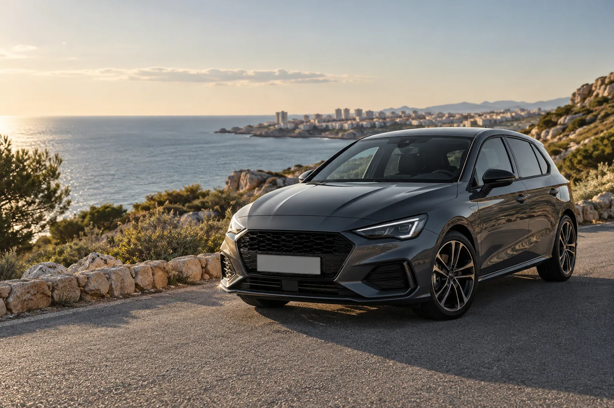
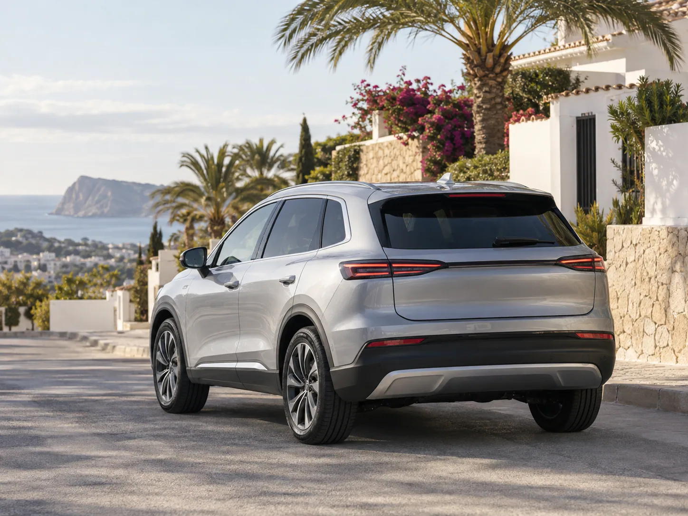
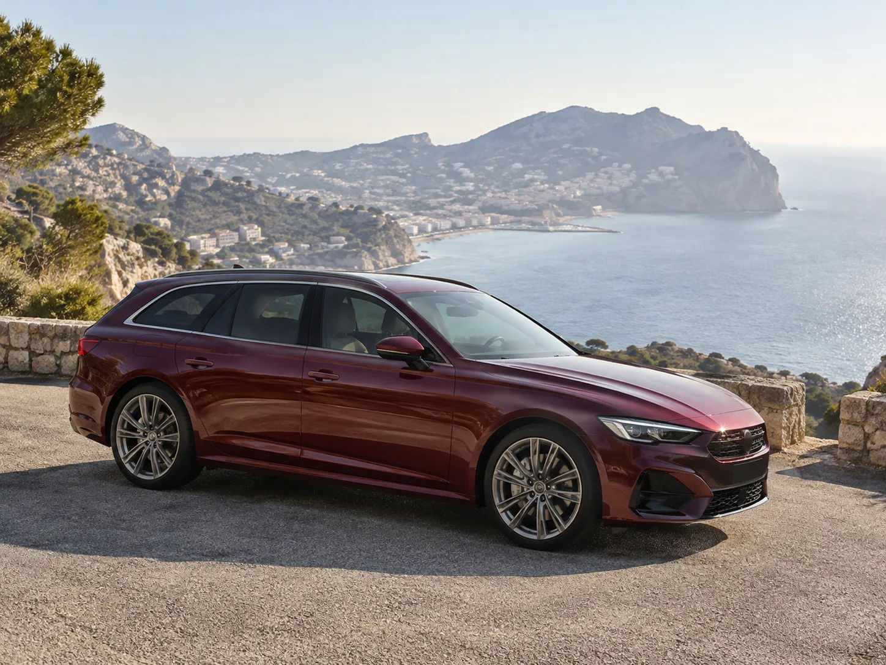

Captur E‑Tech Hybrid
Automático · Gasolina híbrido · 1.6 · 93 CV · 44.500 km
20.750 €Ver fotos y anuncio
COCHES DE OCASIÓN · TORREVIEJA
Pregunta a Capa Costa Auto por los vehículos disponibles y sus detalles antes de desplazarte.
Consulta directamente la disponibilidad actual

Cuéntanos qué estás buscando. Llama para preguntar por la disponibilidad actual y conocer los detalles del vehículo.
ANUNCIOS RECIENTES · CAPA COSTA AUTO
Selección de los anuncios recientes de Capa Costa Auto en Facebook. Confirma disponibilidad, precio y detalles antes de desplazarte.
Automático · Gasolina híbrido · 1.6 · 93 CV · 44.500 km
Las imágenes y la descripción completa están en los anuncios originales de Facebook. Inventario y precios sujetos a cambios; confirma la disponibilidad por teléfono.
UNA COMPRA INFORMADA
Antes de visitar el concesionario, consulta los aspectos que importan para tomar una decisión con calma.
01 / DISPONIBILIDAD
Pregunta qué vehículos están disponibles antes de desplazarte.
02 / ESTADO Y KILOMETRAJE
Pregunta por su estado actual, kilometraje y aquello que quieras ver de cerca.

03 / DOCUMENTACIÓN E ITV
Consulta qué documentación tiene el coche y confirma el estado de la última ITV.
04 / PRECIO TOTAL
Pregunta cuál es el precio final y qué condiciones se aplican antes de decidir.
Escribir un email
ANTES DE LLAMAR
La disponibilidad cambia. Confirma directamente la información de cada vehículo antes de desplazarte.
Llama al concesionario para consultar qué vehículos están disponibles en ese momento.
Puedes preguntar por su estado, kilometraje, documentación, ITV, precio final y las condiciones aplicables.
Capa Costa Auto está en Torrevieja. Llama antes de desplazarte para confirmar los detalles de la visita.
CAPA COSTA AUTO · TORREVIEJA
Consulta qué vehículos están disponibles o pregunta por el coche que tienes en mente.